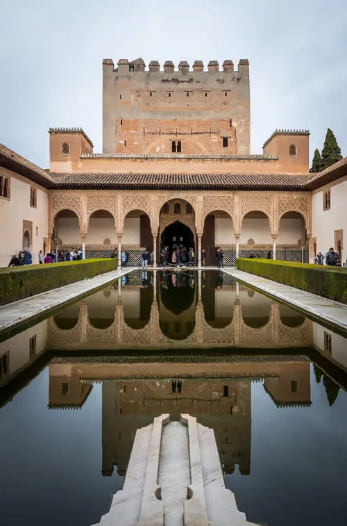

Alhambra Palace, Spain
Constructed: 13th–14th century
The Alhambra was built as a fortress-palace for the Nasrid emirs of Granada, and its intricate stucco walls are covered in thousands of lines of poetry and Quranic calligraphy carved directly into the plaster. Its architects mastered a way of using water, thin reflecting pools, fountains, and channels, to cool the desert air and create constant, soothing sound throughout the courtyards. After the Christian reconquest of Spain in 1492, the site nearly fell into ruin and was even used to stable animals, before 19th-century writers helped spark a restoration that saved it.
Type: Moorish / Islamic Architecture